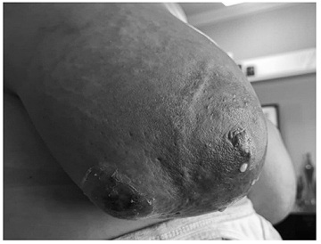

Questão 1 · Fatores de Risco · 4000186722Com relação ao puerpério, assinale a alternativa correta:
A O puerpério é o período que inicia no final do primeiro estágio do trabalho de parto ao retorno do organismo feminino ao estado pré-concepcional, fase esta que termina no terceiro mês após o nascimento da criança.
B A Pré-eclâmpsia/eclampsia é a segunda causa de óbito materno no Brasil. Sendo os fatores de risco para pré- eclâmpsia/eclâmpsia no puerpério os mesmos da gestação.
C A hemorragia pós-parto é a principal causa de morte materna no puerpério. Sendo definida como perda de 30% do volume sanguíneo estimado, independente da alteração hemodinâmica nas primeiras 36 horas.
D Mulheres com depressão pós-parto são menos propensas a aderir às consultas de rotina do puerpério ou a vacinar em dia seus filhos. Entretanto bebês de mulheres com depressão têm maior probabilidade de desenvolvimento neuropsicomotor acima do esperado se comparados às crianças em que as mães não são acometidas pela depressão pós-parto.
E A principal causa de sepse no puerpério é infecção no trato genital, especialmente infecção uterina.
Questão 3 · Obstetrícia · Inf ecção puerperal endometrite puerperal · 4000183810Puérpera apresenta-se com febre e dor abdominal, com útero doloroso à palpação, de consistência pastosa e hipoinvoluído. Lóquios escassos e sem odor fétido. Assinale a alternativa
A O esquema de tratamento mais usado é a associação de clindamicina com gentamicina, podendo associar ampicilina.
B A cultura de material do canal cervical é fundamental para a identificação do agente bacteriano e início do tratamento.
C A hemocultura é fundamental para a identificação do germe e da gravidade, sendo realizada rotineiramente em todas as suspeitas de infecção puerperal.
D A presença de leucocitose nessa paciente é indicativa de infecção puerperal, sem relação com o puerpério fisiológico.
Questão 4 · Tratamento · 4000175878Paciente 32 anos, no quarto dia pós cesariana, com queixa de prostração e febre. Cesariana eletiva por apresentação pélvica. Ao exame: PA 100x60 mmHg, FC 110 bpm, temperatura axilar 38OC. Mamas lactantes, simétricas, s e m hiperemia ou ingurgitamento. Abdome com útero 3 cm acima da cicatriz umbilical, discretamente doloroso a palpação profunda do hipogastro, peristalse presente. Exame especular com secreção amarelada, turva. Toque com útero amolecido, doloroso e com colo entreaberto. Pensando no diagnóstico mais provável para o caso, marque a opção CORRETA:
A deve ser administrado ocitocina intravenosa em
B tromboflebite pélvica deve ser diagnosticada e administrado enoxaparina 1mg/kg duas vezes ao dia imediatamente;
C restos ovulares é o diagnóstico provável e está indicado a histerectomia puerperal;
D antibióticos como clindamicina e gentamicina, associados com metronidazol ou ampicilina estão indicados para o tratamento da endometrite;
E infecção por
Questão 5 · Def inições · Microbiologia e patogênese · 4000170503No tocante à infecções puerperais:
A As bactérias mais comuns são
B Na maioria das vezes, as bactérias envolvidas são aquelas que habitam a pele
C A infecção puerperal (endometrite) é usualmente polimicrobiana
D Febre é sintoma incomum, sendo esperado em menos de 20% dos casos
Questão 6 · Obstetrícia · Inf ecção puerperal endometrite puerperal · 4000170023Puérpera de 24 anos, no 6º dia após parto cesáreo, apresenta dois episódios de febre. Exame físico: BEG, T: 38,4 ºC, PA: 120/80 mmHg, FC 105 bpm, abdome semigloboso, depressível, útero palpável na cicatriz umbilical, doloroso à mobilização, colo uterino pérvio 3 cm, indolor à mobilização, fundo de saco livre. O diagnóstico e a conduta são:
A endomiometrite; clindamicina e gentamicina.
B parametrite; clindamicina e metronidazol.
C endomiometrite; ampicilina e ciprofloxacina.
D parametrite; ceftriaxona + metronidazol.
Questão 7 · Inf ecção puerperal endometrite puerperal · 4000169794Uma puérpera, no 8º dia pós-cesárea, apresenta temperatura de 39ºC, mialgia, astenia, aumento da loquiação e dor à mobilização do útero. Está em aleitamento exclusivo. O provável diagnóstico e a conduta correta para esse caso são, respectivamente:
A Infecção puerperal; antibioticoterapia, curetagem e suspensão do aleitamento.
B Mastite puerperal; suspensão do aleitamento e conduta expectante.
C Infecção puerperal; antibioticoterapia e manutenção do aleitamento.
D Infecção hospitalar; tratamento expectante e manutenção do aleitamento.
Questão 8 · Microbiologia e patogênese · 4000169179Uma mulher de 33 anos com DIU desenvolve sintomas de salpingite aguda . Na laparoscopia, aparecem grânulos sulfúricos na fímbra das trompas. Qual das alternativas a seguir é o organismo mais provável?
A Espécies de
B Actinomyces sp
C N. gonorrhoeae.
D T. pallidum
E C. trachomatis.
Questão 9 · Obstetrícia · Inf ecção puerperal endometrite puerperal · 4000167389Puérpera, 20a, G1P1, amamentando recém-nascido de 20 dias de vida, comparece à Unidade Básica de Saúde com queixa de dor mamária e febre há dois dias. Exame físico: bom estado geral, FC= 100 bpm, FR= 18 irpm, PA= 125x88 mmHg, T= 38° C. Exame das mamas: ingurgitamento bilateral; mama direita avermelhada e dolorosa à palpação, com edema de pele, sem sinais de abscesso, com fissura mamilar. ALÉM DA ORDENHA DAS MAMAS, A CONDUTA É:
A Antibioticoterapia endovenosa; suspensão temporária da amamentação.
B Antibioticoterapia oral; manutenção da amamentação.
C Analgesia; manutenção da amamentação.
D Antibioticoterapia oral; suspensão temporária da amamentação.
Questão 10 · Obstetrícia · Inf ecção puerperal endometrite puerperal · 4000166177Uma puérpera no décimo quarto dia pós-parto encontra-se com febre de 39 graus; seu exame físico é ilustrado na imagem abaixo. Com base nesse caso hipotético, assinale a alternativa que apresenta, correta e respectivamente, o diagnóstico, o agente etiológico mais comum e a conduta a ser adotada.

A abscesso mamário,
B abscesso mamário,
C abscesso mamário,
D mastite puerperal,
E mastite puerperal,
Questão 11 · Fatores de Risco · 4000165377O fator de risco isolado mais significativo para o desenvolvimento de infecção puerperal é:
A via de parto
B prematuridade
C indução de parto
D nível socioeconômico
Questão 12 · Obstetrícia · Inf ecção puerperal endometrite puerperal · 4000164516Em uma puérpera de 14 dias com endometrite, está(ão) presente(s), além da febre: I. Dor pélvica. II. Útero 2 cm abaixo da cicatriz umbilical. III. Lóquios fétidos. Quais estão corretas?
A Apenas I.
B Apenas III.
C Apenas I e II.
D I, II e III.
Questão 13 · Tratamento · Obstetrícia · 4000153156Paciente teve parto cesárea há 8 dias e retorna à maternidade com queixa de febre alta há 2 dias, acompanhada de calafrios nas últimas horas. Refere ainda dor intensa em andar inferior do abdome. A loquiação está escassa, mas apresenta odor fétido. Ao exame: regular estado geral, temperatura 39° C, PA = 100 x 60 mmHg, FC = 120 bpm, útero no nível da cicatriz umbilical, amolecido e doloroso à palpação. Cicatriz de cesariana seca e limpa. Mamas lactantes, com sinais de ingurgitamento mamário e ssura mamilar à esquerda, mas sem evidência de mastite ou abscesso mamário. Ultrassonogra a não evidenciou sinais ecográ cos de conteúdo anormal na cavidade uterina ou na cavidade abdominal. Hemograma com leucocitose e desvio à esquerda. A conduta indicada para esse caso é
A suspender amamentação e iniciar antibioticoterapia com clindamicina por via oral, em nível ambulatorial.
B manter amamentação e iniciar antibioticoterapia com clindamicina por via oral, em nível ambulatorial.
C suspender a amamentação e internar a paciente para curetagem uterina de urgência e antibioticoterapia intravenosa com clindamicina e gentamicina.
D manter a amamentação e iniciar antibioticoterapia intravenosa com clindamicina e gentamicina.
Revisar: possível letra faltando em enunciado
Questão 14 · Ginecologia · Prevenção de Inf ecção da Ferida Operatória Inf ecção do Sítio Cirúrgico ISC · 4000185085Inf ecção puerperal endometrite puerperal Mulher de 30 anos de idade, diabética tipo 1, retorna à maternidade no 5º dia pós-parto vaginal, com quadro de febre e dor na região perianal. Ao exame, a região perianal apresentava-se dolorosa à palpação, com edema e eritema estendendo-se à região glútea, e deiscência da episiotomia. Nesse caso, é correto afirmar:
A Não se trata de infecção hospitalar, pois esse quadro é frequente em paciente diabética.
B Trata-se de infecção hospitalar, pois está relacionada à assistência ao parto.
C Não se trata de infecção hospitalar, pois se manifestou após a alta.
D Trata-se de infecção hospitalar, pois é uma ferida em região contaminada.
Questão 15 · Tratamento · Diagnóstico · Inf ecção puerperal endometrite puerperal · 4000172876Mulher, no sexto pós-operatório de cesariana por desproporção céfalo-pélvica, procura o centro obstétrico com queixa de febre de 38,6ºC há dois dias e desconforto para urinar. Ao exame físico, apresenta-se taquicárdica, com mamas ingurgitadas, dor à palpação abdominal e lóquios com mau cheiro. A melhor hipótese diagnóstica e o tratamento recomendado são:
A Mastite puerperal; antibioticoterapia intravenosa
B Pielonefrite; antibioticoterapia via oral
C Mastite puerperal; antibioticoterapia via oral
D Endometrite puerperal; antibioticoterapia intravenosa
Questão 16 · Tratamento · Diagnóstico · 4000172156Paciente evoluiu com dor e di culdade de deambulação no pós-parto, necessitando analgésico de resgate. No 2o dia pós- parto, apresenta temperatura oral aferida de 38,6°C. No exame clínico, está em bom estado geral e eupneica. O abdome é doloroso à palpação, com sinal de descompressão brusca negativo e ruídos hidroaéreos presentes. A ferida cirúrgica tem bom aspecto. A loquiação é fétida. A conduta inicial indicada para essa paciente é:
A Administrar antibiótico.
B Histerectomia subtotal.
C Aspirar restos ovulares.
D Anticoagulação plena.
E Histerectomia total.
Questão 17 · Tratamento · Diagnóstico · Obstetrícia · 4000147461Avalie as seguintes afirmações relativas à infecção puerperal e indique a alternativa correta:
A Útero amolecido, hipoinvoluído e febre caracterizam a tríade de Bumm.
B Histerectomia é o tratamento de escolha nos casos de tromboflebite pélvica, um dos diagnósticos diferenciais da infecção puerperal.
C Endometrite é considerada a forma mais rara de infecção puerperal.
D Clindamicina associada à Gentamicina via endovenosa é um dos esquemas terapêuticos de escolha para tratamento da infecção puerperal.
E O tratamento ambulatorial da infecção puerperal com antibioticoterapia via oral é superior ao tratamento hospitalar, uma vez que evita que a puérpera se afaste do recém-nascido.
Questão 18 · Diagnóstico · 4000147414Assinale a alternativa que caracteriza a tríade de Bumm.
A Febre, dor pélvica, secreção vaginal de odor fétido.
B Dor pélvica, útero hipoinvoluído, loquiação fétida.
C Loquiação com odor anormal, febre, útero hipoinvoluído.
D Útero hipoinvoluído, amolecido e doloroso.
E Útero amolecido, loquiação fétida, febre.
Questão 19 · Diagnóstico · Morbidade f ebril puerperal · 4000144625No diagnóstico diferencial da febre puerperal persistente, pela condição de febre por antibiótico, os testes diagnósticos indicados são:
A Sorologia específica, hemograma.
B Cultura de secreção endometrial e sangue.
C Gráfico de temperatura; leucometria com eosinofilia.
D Predominantemente, clínico US, TC, RM e teste terapêutico com heparina (ver capítulo de trombose venosa e embolia pulmonar).
Questão 20 · Def inições · Microbiologia e patogênese · Morbidade f ebril puerperal · 4000144624Sobre a Infecção Puerperal, analise os itens, a seguir: 1 - É aquela que se origina do aparelho genital, após parto recente. Há necessidade de complementar o conceito de infecção puerperal com o de morbidade febril puerperal, pela eventual di culdade de caracterizar a infecção que ocorre, após o parto. li - Morbidade febril puerperal é a temperatura de, no mínimo, 39º C durante três dias quaisquer, dos primeiros 7 dias pósparto, incluindo as 24 horas iniciais. Ili - A infecção puerperal é polimicrobiana e os agentes etiopatogênicos são germes aeróbios e anaeróbicos da ora do trato geniturinário e intestinal. Está correto o que se afirma em:
A I e II, apenas.
B I e III, apenas.
C li e Ili, apenas.
D Nenhum dos itens.
Questão 21 · Diagnóstico · Obstetrícia · 4000143227No 5º dia pós-cesariana de emergência por sofrimento fetal agudo, paciente retorna ao hospital referindo febre e dor pélvica há 24 horas. Ao exame, encontra-se em regular estado geral, hipocorada +/4+ e hidratada; Tax = 39ºC, FC = 92bpm, FR = 18irpm, PA = 110 x 70mmHg; abdômen ácido e difusamente doloroso à palpação profunda em andar inferior, sem descompressão dolorosa; exame especular com saída de lóquios serossanguinolentos com odor fétido e toque vaginal com colo fechado, doloroso à mobilização; exames laboratoriais evidenciam leucocitose de 18.000 com 8% de bastões. Diante do quadro clínico descrito, o critério mais importante para a principal hipótese diagnóstica é:
A febre
B lóquios de odor fétido
C leucocitose com desvio
D dor à mobilização uterina
Questão 22 · Diagnóstico · Inf ecção puerperal endometrite puerperal · 4000143016Puérpera, 8º dia pós-parto, cesariana, apresentando febre (TAX 38º C), útero pouco involuído e lóquios fétidos, sendo iniciado clindamicina + gentamicina com melhora parcial da febre. Realizada USO abdominal e pélvica, fechou diagnóstico de:
A Endometrite puerperal
B Abcesso subovariano
C Tromboflebite pélvica
D Hidrossalpinge
Questão 23 · Inf ecção puerperal endometrite puerperal · Partograma · 4000140848Paciente hígida foi submetida a maturação de colo com misoprostol e posterior indução de parto por pós-datismo, conforme partograma apresentado. Paciente evoluiu com dor e di culdade de deambulação no pós-parto, necessitando analgésico de resgate. No 2º dia pós- parto, apresenta temperatura oral aferida de 38,6 C. No exame clínico, está em bom estado geral e eupneica. O abdome é doloroso à palpação, com sinal de descompressão brusca negativo e ruídos hidroaéreos presentes. A ferida cirúrgica tem bom aspecto. A loquiação é fétida. A conduta inicial indicada para essa paciente é:

A Administrar antibiótico.
B Aspirar restos ovulares.
C Anticoagulação plena.
D Histerectomia subtotal.
Questão 24 · Tratamento · Morbidade f ebril puerperal · 4000138492Uma paciente no 14.o dia pós-parto normal, em uso de vancomicina e piperacilina + tazobactam, iniciou quadro de febre há cinco dias. Os exames de imagem e laboratoriais estão normais. Com base nesse caso hipotético, assinale a alternativa que apresenta, correta e respectivamente, o diagnóstico mais provável e a conduta a ser adotada.
A tromboflebite pélvica e anticoagulante.
B endomiometrite e histerectomia puerperal.
C síndrome de Fournier e debridamento e câmera hiperbárica.
D salpingite e salpingectomia.
E infecção fúngica e anfotericina B.
Questão 25 · Tratamento · Diagnóstico · Morbidade f ebril puerperal · 4000133095O período pós-parto, denominado puerpério, inspira muitos cuidados. Algumas complicações se iniciam ainda na gravidez e outras são mais específicas desse período. Sobre essas complicações, é correto afirmar:
A A incidência de endometrite pós-cesariana é ligeiramente superior à do parto normal quando é realizada antibioticoprofilaxia.
B Na maioria das pacientes, os picos febris nas primeiras 24 horas após o parto vaginal não estão associados à infecção puerperal; entretanto devemos ficar atentos à possibilidade da infecção pélvica grave por estreptococos do grupo A.
C As mastites ocorrem com mais frequência nos primeiros dias do puerpério, com apresentação bilateral e maior incidência de germes da pele da mãe.
D Durante o processo infeccioso da mama é contraindicada a amamentação.
Questão 26 · Microbiologia e patogênese · 4000130377Puérpera, 42a, comparece à Unidade Básica de Saúde com queixa de febre, que começou há dois dias, dor em baixo ventre e o sangramento vaginal, que estava quase parando, aumentou muito, com odor fétido e muitos coágulos. Antecedente pessoal: oitavo dia de puerpério, parto cesárea, após 18 horas de trabalho de parto, com bolsa rota por 10 horas. Exame físico: FC= 110 bpm, T= 38°C, PA= 110x70 mmHg; toque vaginal: colo 1 polpa folgada de dilatação, útero globoso, aumentado para 14 semanas; mamas: lactantes, sem alterações. A ETIOLOGIA É:
A Streptococcus do grupo A.
B Staphylococcus aureus.
C Clostridium perfringens.
D Infecção polimicrobiana.
Questão 27 · Fatores de Risco · 4000111782Marilda deu à luz por parto cesárea há 8 dias e há 2 dias apresenta quadro clínico de febre (temperatura axilar 39,3°C) intermitente há 1 dia, mal-estar geral, dor abdominal e inapetência. Está muito chorosa, não consegue dormir direito e encontra di culdades para oferecer lactação em quantidade satisfatória para seu bebê. Nega sintomas urinários. Tem dor na cicatriz cirúrgica. Ao exame físico, além do comprometimento no estado geral da paciente e a febre, ela tem distensão abdominal, mas a cicatriz operatória está em bom estado, o exame ginecológico revelou eliminação de lóquios em pequena quantidade e fétidos. Ao toque bimanual o colo uterino está permeável, e o útero encontra-se subinvoluído, amolecido e bastante doloroso. Assinale a alternativa CORRETA, que inclui CONDIÇÕES PREDISPONENTES para o problema apresentado por essa paciente:
A Trabalho de parto prolongado, toques vaginais repetidos, parto cesárea
B Rotura prematura de membranas, placenta fúndica, cesárea eletiva
C Elevado nível socioeconômico da paciente, uso de antibioticoterapia proflática, pré-eclâmpsia
D Primiparidade, colecistopatia calculosa, antecedente pessoal de plástica mamária
Questão 28 · Inf ecção puerperal endometrite puerperal · 4000078914Primípara, 30 anos, GIPIA0. No terceiro dia pós-parto transpélvico, sem episiotomia, apresenta febre baixa. Exame ginecológico: útero aumentado de volume (aproximadamente 16 cm), móvel e indolor; colo permeável 1 polpa digital; lóquios siológicos (Lochia rubra); mamas ingurgitadas e dolorosas e temperatura axilar = 37,2ºC. A conduta mais adequada é:
A Monitorar curva térmica e solicitar de ultrassonografia pélvica.
B Solicitar leucograma e ultrassonografia transvaginal.
C Orientar, administrar analgésicos e realizar massagem nas mamas.
D Solicitar bioquímica sanguínea e administrar ocitocina.
Questão 29 · Tratamento · Diagnóstico · 4000130187Mulher, 38a, pessoal: décimo dia de pós-parto. útero na cicatriz umbilical e colo pérvio para uma polpa. Ultrassonogra a abdominal: útero com 500 cm³ de volume e endométrio de 15 mm de maior espessura e anexos visibilizados e normais. O diagnóstico e a conduta são:
A Tromboflebite pélvica; iniciar anticoagulação com heparina e antibioticoterapia.
B Endometrite puerperal; realizar antibioticoterapia.
C Infecção urinária com cistite; iniciar antibioticoterapia após coleta de urocultura.
D Restos ovulares infectados; administrar antibioticoterapia e realizar curetagem.
Questão 30 · Tratamento · Diagnóstico · 4000118874No 4º dia de puerpério de parto cesárea, paciente apresenta dois episódios de temperatura de 38,5ºC, taquicardia e dor abdominal. EF: útero de consistência amolecida e subinvoluído, com loquiação fétida. A conduta é:
A Antitérmico e observação clínica por 48 horas.
B Antibioticoterapia oral com cefalosporina e metronidazol.
C Antibioticoterapia intravenosa com clindamicina e gentamicina.
D Aguardar culturas de sangue e de endocérvix.
Questão 31 · Diagnóstico · 4000117748Mulher deu à luz por meio de parto normal. Apesar de ter sido internada com rotura prematura de membranas, teve uma evolução satisfatória do trabalho de parto. No terceiro dia pós-parto, queixou-se de dor abdominal, e o exame do abdome constatou a presença de síndrome de Bumm (útero aumentado, amolecido e doloroso). Havia um ligeiro aumento de temperatura (37,8oC) e taquis gmia (98 bpm). Considerando os dados apresentados, é correto supor que essa paciente tenha desenvolvido
A Endomiometrite.
B Parametrite.
C Tromboflebite pélvica.
D Anexite.
E Pelviperitonite.
Questão 32 · Diagnóstico · 4000106876Uma puérpera, no 5° DPO de cesárea, tem quadro de febre, dor abdominal e loquiação com odor fétido. Durante a gestação, cursou com rotura prematura de membranas. O provável diagnóstico é:
A Doença inflamatória pélvica.
B Cervicite.
C Vaginose bacteriana.
D Infecção puerperal (endometrite).
E Sífilis.
Questão 33 · Tratamento · 4000009188Puérpera, no 3º dia pós-parto vaginal, procura assistência médica na UBASF referindo quadro de febre elevada e calafrios. Ao exame, a mesma encontra-se taquicárdica e taquipneica, apresentando dor à palpação abdominal, com útero palpável acima da cicatriz umbilical e amolecido. Apresenta ainda loquiação com odor fétido. Qual a melhor conduta a ser tomada?
A Indicar histerectomia.
B Internar e iniciar clindamicina e gentamicina.
C Tratar em domicílio com ceftriaxona, por 7 dias.
D Indicar tratamento cirúrgico para drenagem de provável abscesso.
Questão 34 · Inf ecção puerperal endometrite puerperal · 4000122101Puérpera em 7º dia pós-parto cesáreo, procura pronto-socorro, com queixa de dor abdominal e aumento do sangramento vaginal. Amamenta sem di culdades. Nega outras queixas. Ao exame físico: bom estado geral, corada, hidratada; T oral: 37,8ºC; FC = 108 bpm; FR = 16 irpm. Aparelho cardiorrespiratório sem alterações. Mamas túrgidas, com calor local, sem hiperemia local, dolorosas, expressão positiva. Abdome globoso, ruídos hidroaéreos presentes, útero amolecido, palpável a 3 cm acima da cicatriz umbilical, doloroso à palpação. Ferida operatória em bom aspecto, sem sinais ogísticos. Especular: lóquio em quantidade aumentada, com odor fétido. Toque vaginal: colo pérvio para 2 cm, útero aumentado, doloroso. Em relação à principal hipótese diagnóstica:
A O principal fator de risco é a ocorrência de fissuras mamárias.
B O principal fator de risco é a ocorrência de parto cesáreo.
C A paciente pode ser tratada ambulatorialmente e não necessita de examescomplementares.
D Pode-se orientar observação do quadro e retorno em 2 dias para reavaliação dossintomas.
Questão 35 · Inf ecção puerperal endometrite puerperal · 4000041250Em relação à Infecção Puerperal, considere as afirmações a seguir. I. A endometrite é a principal e a mais frequente forma de infecção puerperal. II. A tríade de Bumm faz parte do quadro clínico da infecção puerperal. III. A mais importante via de contaminação é endógena, por ascensão dos germes. Estão CORRETAS as afirmações contidas em:
A I e III, apenas.
B I, apenas.
C I, II e III.
D I e II, apenas.
Questão 36 · Epidemiologia · Microbiologia e patogênese · 4000117725Em relação à infecção puerperal, podemos concluir que:
A Sempre evolui para quadro de septicemia e choque.
B A tromboflebite pélvica é de fácil diagnóstico.
C A endometrite é a forma principal e mais frequente de infecção puerperal.
D A via de propagação da infecção é somente a ascendente.
Questão 37 · Tratamento · Diagnóstico · 4000117077Paciente procura pronto-socorro no 6º pós-parto cesárea, com queixa de febre e dor pélvica persistente. Ao exame: regular estado geral; descorada; PA = 120 x 80 mmHg; FC = 112 bpm; T = 38,7°C. Útero na altura da cicatriz umbilical, doloroso à palpação. Ao exame especular, lóquia com odor fétido. Principal hipótese diagnóstica e conduta imediata:
A Infecção puerperal e histerectomia.
B Tromboflebite pélvica e anticoagulação plena.
C Atonia uterina e ocitocina endovenosa.
D Atonia uterina e histerectomia.
E Infecção puerperal e antibiótico de amplo espectro.
Questão 38 · Tratamento · Diagnóstico · 4000127037Puérpera com 16 horas pós-parto de cesariana eletiva, indicada por idade gestacional de 39 semanas e 3 dias e apresentação pélvica, apresenta temperatura de 38,2ºC. Ao exame: loquiação rubra de moderada quantidade, útero 2 cm abaixo da cicatriz umbilical e ferida operatória em bom aspecto. A conduta do médico assistente deverá ser:
A Observação clínica com curva térmica.
B Administração de clindamicina e gentamicina.
C Administração de cefalosporina endovenosa.
D Solicitação de ultrassonografia de abdômen inferior.
Questão 39 · Tratamento · 4000129271Uma mulher no 10.° dia pós-parto vaginal sem episiotomia, comparece à Unidade de Emergência referindo febre de até 38,5°C, dor abdominal e sangramento vaginal aumentado, de odor fétido. Ao exame, apresentou pressão arterial = 100 x 60 mmHg, temperatura axilar = 38°C, frequência cardíaca = 105 bpm, dor à palpação do abdome em hipogástrio, sem sinais de irritação peritoneal, e útero palpável ao nível da cicatriz umbilical. Ao exame especular, foram observados sangue coletado em fundo vaginal e pequena quantidade de membranas em orifício cervical externo. Ao toque vaginal, a paciente apresentou colo pérvio e dor à mobilização do colo uterino. Qual a conduta mais adequada para o caso?
A Antibioticoterapia por via oral (ampicilina e sulbactam) e uterotônico.
B Antibioticoterapia endovenosa (gentamicina e clindamicina) e laparotomia.
C Antibioticoterapia endovenosa (gentamicina e clindamicina) e histerectomia.
D Antibioticoterapia por via oral (ampicilina e sulbactam), em regime ambulatorial.
E Antibioticoterapia endovenosa (gentamicina e clindamicina) e curetagem uterina.
Questão 40 · Inf ecção puerperal endometrite puerperal · 4000153807Paciente primípara com 18 horas pós-parto cesárea eletiva, indicada por malformação fetal (gastrosquise), apresenta temperatura de 38º C. O útero encontra-se contraído, loquiação rubra em moderada quantidade e ferida operatória em bom aspecto. O médico assistente deve
A iniciar antibioticoterapia venosa.
B iniciar antibioticoterapia oral.
C solicitar ultrassonografia de abdômen total.
D ter conduta expectante.
E realizar curetagem uterina.
Questão 41 · Tratamento · Diagnóstico · 4000102617Puérpera no 9 o dia pós parto cesárea (indicação iterativa) procura hospital relatando sensação de mal estar, fraqueza, tontura, náuseas e febre aferida de 38,5 °C, 3 episódios nas últimas 24 horas. Ao exame físico, apresenta regular estado geral, consciente, orientada, descorada +/4+, desidratada +/4+, pressão arterial de 10 × 80 mmHg, frequência cardíaca de 85 bpm, febril (38,9 °C), útero doloroso com o fundo situado 4 cm abaixo da cicatriz umbilical, amolecido, acompanhado de saída de loquiação escura e fétida. O diagnóstico correto e o tratamento mais adequado são: Respostas: 1 12 23 34
A endomiometrite puerperal; ciprofloxacino 500 mg V O 8/8h + cloranfenicol 500 mg VO 8/8 h.
B atonia uterina; 20 UI ocitocina IV 6/6 h por 24 horas.
C retenção de restos placentários; metilergonovina 0,125 mg V O 8/8 h por 3 dias.
D endomiometrite puerperal; histerectomia subtotal abdominal.
E endomiometrite puerperal; ampicilina 1 g IV 6/6 h + gentamicina 4 mg/kg a cada 24 horas + metronidazol 500 mg IV 8/8 h até permanecer 48 horas afebril.